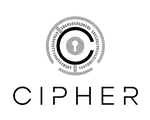
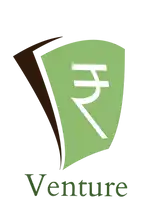
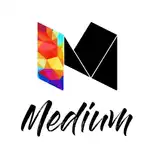

our SIGs
IET NITK consists of six different Special Interest Groups:

Cipher SIG brings together people interested in Computer Science and Information Technology.
Rovisp SIG brings together people who are passionate about Electronics and Electrical Technology.

Torsion SIG brings together people interested in Mechanical, Civil, Chemical and Material Sciences.

We're interested in exploring the fields of finance, business and management.

Inkheart is our new Lit&Phil SIG for people who are passionate about literature, music etc

Medium SIG is dedicated to people interested in Media and Marketing.